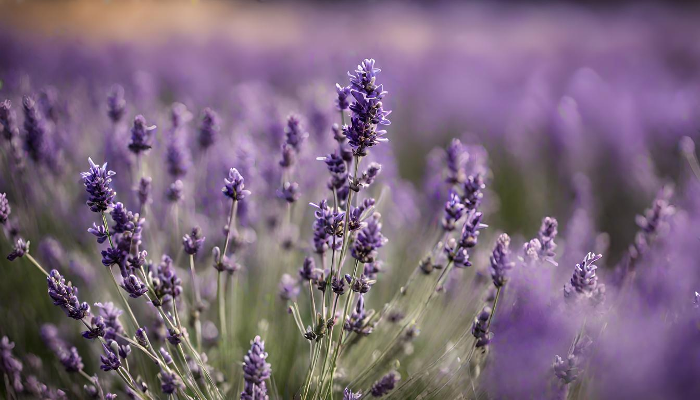
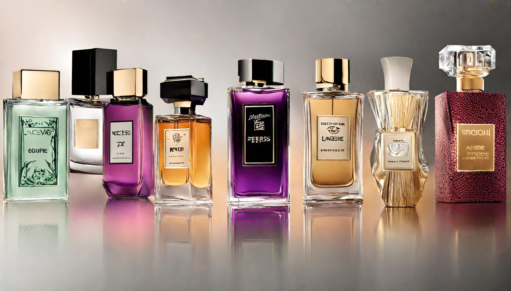

Había una vez en un pequeño pueblo rodeado de campos de lavanda, un apasionado perfumista llamado Alejandro. Su nariz era tan aguda como su imaginación era vasta. Cada día, se sumergía en el mundo de los aromas, buscando la combinación perfecta que capturara la esencia de la naturaleza que lo rodeaba. Un día, mientras paseaba por los campos de lavanda bajo el cálido sol, Alejandro sintió la inspiración flotando en el aire. Inspirado por la frescura de las flores y el suave susurro del viento, decidió crear una fragancia que encapsulara la pureza y la belleza de aquel lugar mágico.
Regresó a su pequeño taller, rodeado de frascos de esencias y flores secas. Con cuidado, comenzó a mezclar notas de lavanda con toques sutiles de jazmín y cítricos, recreando la armonía de aquel día soleado en los campos. Cerró los ojos e imaginó a las abejas zumbando entre las flores, mientras la fragancia cobraba vida en su mente. Dedicó días y noches a perfeccionar su obra maestra, ajustando cada detalle hasta que logró una mezcla que transportaba a cualquiera que la inhalara a aquel pueblo pintoresco. La llamó "Esencia de Lavanda Encantada".
Cuando compartió su creación con la gente del pueblo, quedaron maravillados por la manera en que la fragancia evocaba recuerdos y emociones. La noticia sobre la magia que Alejandro había destilado en su frasco se extendió rápidamente, atrayendo visitantes de lugares lejanos. Así, el pequeño pueblo se convirtió en un destino famoso por sus fragancias únicas, y Alejandro siguió explorando los límites de su arte, creando historias perfumadas que llevaban a las personas a lugares donde solo los sueños se atreven a llegar. Y así, en cada gota de sus creaciones, la esencia de aquel pueblo encantado perduraba, recordándonos que la verdadera magia se encuentra en las cosas simples y hermosas de la vida.